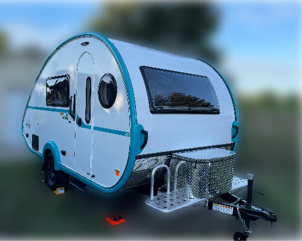

T@B 400 Documentation
This Is A Personal Site
This site is NOT associated with nüCamp and the information on here is material I've written or derived from various sources.
Your model may differ from ours. Use this information at your own risk.
This site is my personal documentation for the 2022 T@B 400 we own which I have online in case it can help someone else.
We placed our order in early 2021 and it was delivered in September 2021.

Our customizations were:
- Convenience Package (including solar)
- Boondock Package
- 3-way fridge
- Custom paint trim
Last update:
2022-03-25